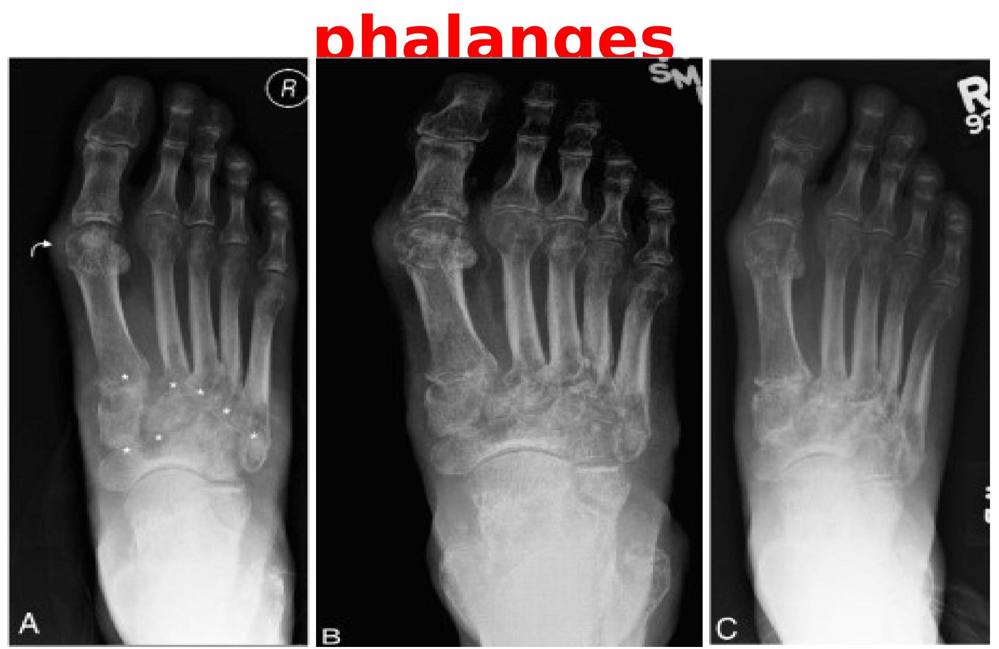

TUBERCULOSIS OF THE BONES
AETIOLOGY
- It is caused by Mycobacterium tuberculosis
ROUTES OF INFECTION( MODES OF TRANSMISSION)
- Blood stream(haematogenous)from pulmonary foci
- Direct extension from a joint or soft tissue
- Rarely- lymphatic spread from infected lymphnodes
PATHOLOGY
- When the bacilli reaches the bone, there a typical tuberculous inflammatory reaction.
- Part of the bone is destroyed and replaced by granulation tissue.
- A tuberculous abscess is commonly formed. It tracks beneath the soft tissues or towards the surface of the body.
- With treatment, there is a tendency to healing by fibrosis.
SITES
- Vertebral column( thoracic & lumbar vertebrae)
- It's the commonest site
- The infection typically affects the vertebral bodies
- The vertebral bodies collapse anteriorly becoming wedge shaped resulting to Gibbus deformity( exaggerated kyphosis)
- An abscess may track downwards along the vertebral column
- The abscess may extend backward towards the spinal canal causing pressure on the spinal cord which may lead to paraplegia
- Hands
- It affects the metacarpals and phalanges causing tuberculous dactylitis
- Feet
- It affects the metatarsals and phalanges
- Long bones( femur, tibia, radius & ulna)
- It causes juxta-articular tuberculosis
- It occurs as an extension of tuberculous arthritis
- The articular ends of the bones are frequently eroded by tuberculosis.
CLINICAL FEATURES
It has a gradual( insidious) onset.
-
Constitutional features:
- Night sweats
- Fever
- General malaise
- Loss of weight
- Some may have a cough(rare)
-
Specific features:
The depend on the site affected:
- Hands and feet- Pain and swelling
- Long bones- pain and stiffness of affected joint
- Vertebrae- Backache, deformities( scoliosis or kyphotic Gibbus deformity)
- Cold abscess as the pus follows the psoas muscle
- Paraplegia and other neurological features
INVESTIGATIONS
- Full haemogram + ESR
- Hb- slightly reduced
- Relative lymphocytosis
- ESR- moderately elevated( 40-60mm/hr)
- Sputum for AAFB
- Gastric lavage for AAFB
- Radiological investigations:
- X-ray
- Diffuse rarefaction around the site of infection
- Erosion of the bone(juxta-articular tuberculosis)
- In most cases - shadow in soft tissues denoting abscess formation.
- Wedging of the vertebral bodies
- MRI - Bone destruction, abscess, spinal cord involvement
- CT Scan
- Radioisotope scanning - areas or increased osteoblastic activity( red spots)
- X-ray
Tb spine with wedging of vertebrae

Tb of acetabulum & femoral head

Tb of the metatarsals
- Mantoux test- positive
- Pus aspirate for culture
- Biopsy of the bone or soft tissues for histology - features of tuberculosis
TREATMENT
- Supportive treatment
- Nutritional support
- Correct the anaemia
- Analgesics
- Chemotherapy
- Combined anti-Tb therapy for six months. Drugs are combined so a to:
- reduce resistance
- reduce the dosage of individual drugs
- reduce drug complications
- Combined anti-Tb therapy for six months. Drugs are combined so a to:
- Surgery
- Drainage of the abscess
- Surgical decompression of the spinal cord and stabilization of vertebral column
- Bone curettage and grafting
- Synovectomy
- Arthroplasties
- Rehabilitation
- Physiotherapy
- Use of crutches
- Provision of wheelchairs for paraplegics
PROGNOSIS
The outcome of the disease may take three forms:
- Heal completely
- Become a chronic illness
- Spread to other organs in form of milliary Tb
COMPLICATIONS
- Permanent bone/joint destruction leading to permanent deformities
- Paraplegia and other neurological complications
- Spread to other organ- milliary Tb
ASSIGNMENTS
- Syphilitic bone infection
- Madurella mycetoma (Madura foot)